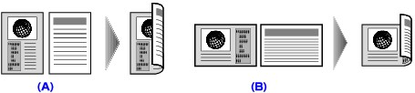
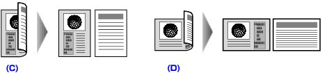
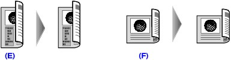

You can select the Two-sided copy setting for 2-sided when Standard copy or Collated copy is selected.
Press the right Function button to select the stapling side.
-
Single-sided to Two-sided (1->2sided print)
(A) Long-side stapling
(B) Short-side stapling
-
Two-sided to Single-sided (2->1sided print)
(C) Long-side stapling
(D) Short-side stapling
-
Two-sided to Two-sided (2->2sided print)
(E) Long-side stapling
(F) Short-side stapling
 Note
Note-
When you select 2->1sided print or 2->2sided print, load the original in the ADF.
-
If Device memory is full. Cannot continue process. appears on the LCD when scanning, set the print quality to Standard or reduce the number of sheets of documents, then try copying again. If the problem is not resolved, set the print quality to Fast and try copying again.
-
Two-sided copy setting can be used in combination with 2-on-1 copy or 4-on-1 copy when Standard copy is selected.
-
If you are copying in black & white, print intensity of the Two-sided copy may differ from that of a single-sided copy.
When you load the original on the Platen Glass for Two-sided copying:
Placing documents (platen) screen appears on the LCD after scanning each sheet of original.
Remove the sheet of original from the Platen Glass after scanning and load the next sheet on the Platen Glass, then press the OK button.
Note-
If you do not need more scanning, press the left Function button. The machine starts copying.
-
You can add the copying job while printing.